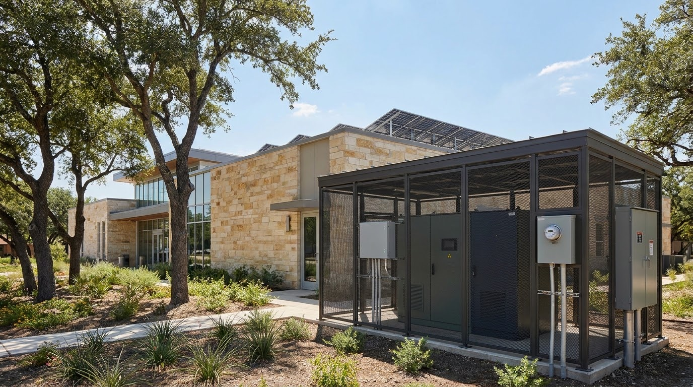

Stations and homes on six feeders
Compare where the compute goes: at the station, or in every home.
More detail
The station siteillustration, batteries, GPU PCs, 1.5 km ring

Permit counts in the ringaddresses, solar and battery homes · Measured
Co-located at the stationstorage yard and compute rack · Simulation
Co-located at the station
SimulationStorage yard
Four Base Core batteries, 39.2 kWh and 10 kW each, 156.8 kWh in all. Each keeps 30% for backup and runs one cycle a day at ERCOT day-ahead prices for Austin.
- Capacity156.8 kWh
- Power40 kW
- Reserve47.0 kWh
- Cycles1 / day
Compute rack
Four GPU PCs, one for each customer tier, busy 67.2 hours a week each. About 350 W each under load, powered at the week's average Austin price.
- Business$1.09/h
- Base$0.79/h
- Partner$0.34/h
- External$0.16/h
Station economicsbattery and GPU split, station vs one home · Simulation
Battery trades use real ERCOT day-ahead prices for Austin; GPU hours use dated public cloud rates.
Library station
One home
Why this librarymost energy permits within 1.5 km
Why this library
It has the most energy permits within 1.5 km of the public buildings we compared.
- Menchaca Road Branch537 permits
7 of 40 sample member homes sit inside the ring.
See the ring on the mapModel assumptionsADR-0016, planning estimates
Stations hold the bulk GPUs; homes provide batteries and feeder-local compute in this placement model (ADR-0016). The library is an example site from Austin Public Library locations. GPU PCs busy 40% of the time is a planning estimate. Workloads a station could run: member questions, business inference, and open-science batch work such as protein folding. The six-feeder view shows the idea at a glance; the fleet recording shows recovery evidence.
Inspect recorded fleet recovery